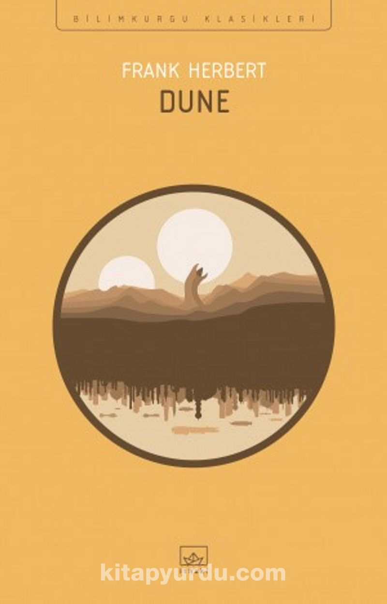

DUNE - FRANK HERBERT
Kimilerinin orta çağ dediği zamanlarda geçen hikaye uzak geleceğe, uzaya taşınmış. Saltanat ve cumhuriyetin, savaş ve barışın, mucize ve teknolojinin, din ve bilimin mücadele etmediğinin, asıl olanın insani faziletler olduğunun vurguları çok güzel. Ayrıca kitapta biraz oryantalizm esintisi mevcut. Metinde bolca Arapça ve Türkçe ifadelerle karşılaşıyorsunuz. O kadar ki neyin terim neyin tercüme olduğu bazen karışıyor. Kitabı okumaya ekler kısmını okuyarak başladığınız takdirde terminolojisinde asla takılmadan su gibi akarak okuyabileceğinizi düşünüyorum. Bu nedenle sonuna sözlük koymak oldukça isabetli olmuş. Felsefi derinliği, bilim kurgu kitaplarından beklenmeyecek düzeyde yüksek kitaplardan biriydi. Din ve felsefenin kitaptaki yoğunluğu beni oldukça tatmin etti. Karakterler ve diyaloglar ise oldukça canlıydı. Bunun yanı sıra sürükleyiciliği oldukça yüksek, roman değil de film izliyormuş gibi hissediyorsunuz. Heyecan her bölümde yüksek ve kitap tahmin ettiğimiz gibi soru işaretleri ile bitiyor.